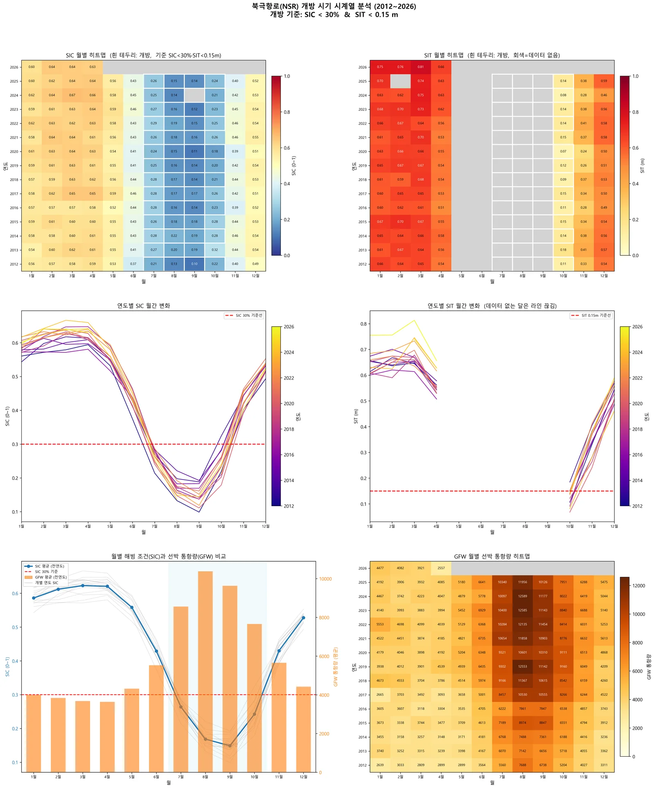
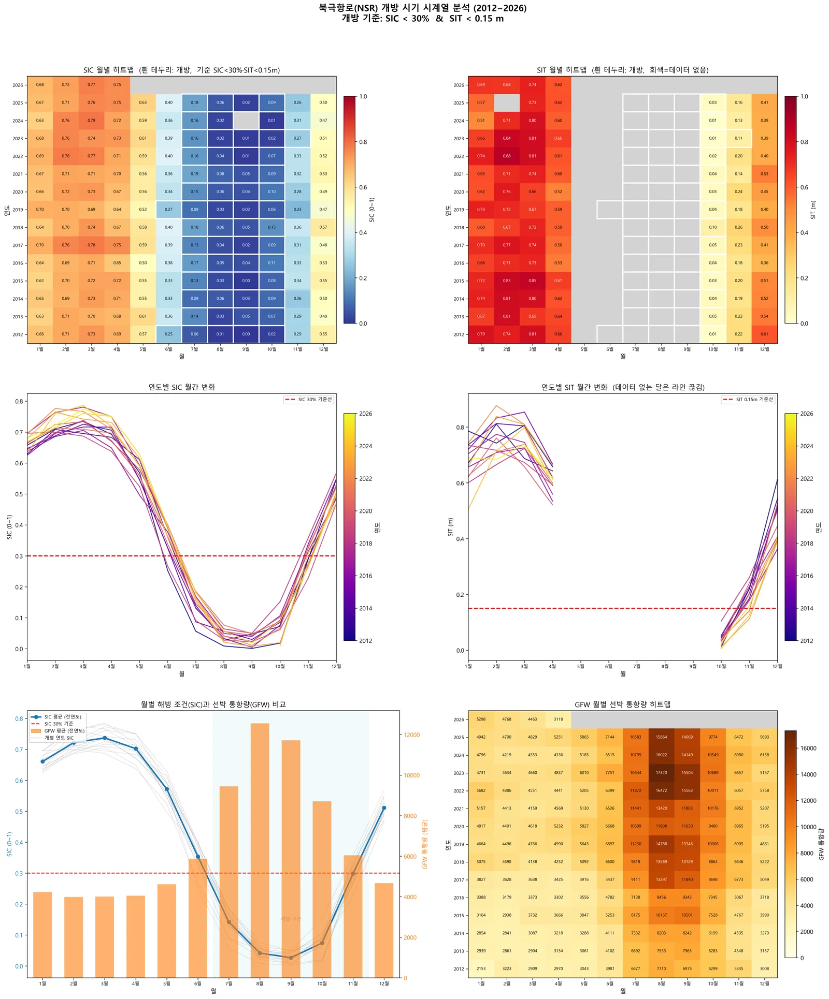
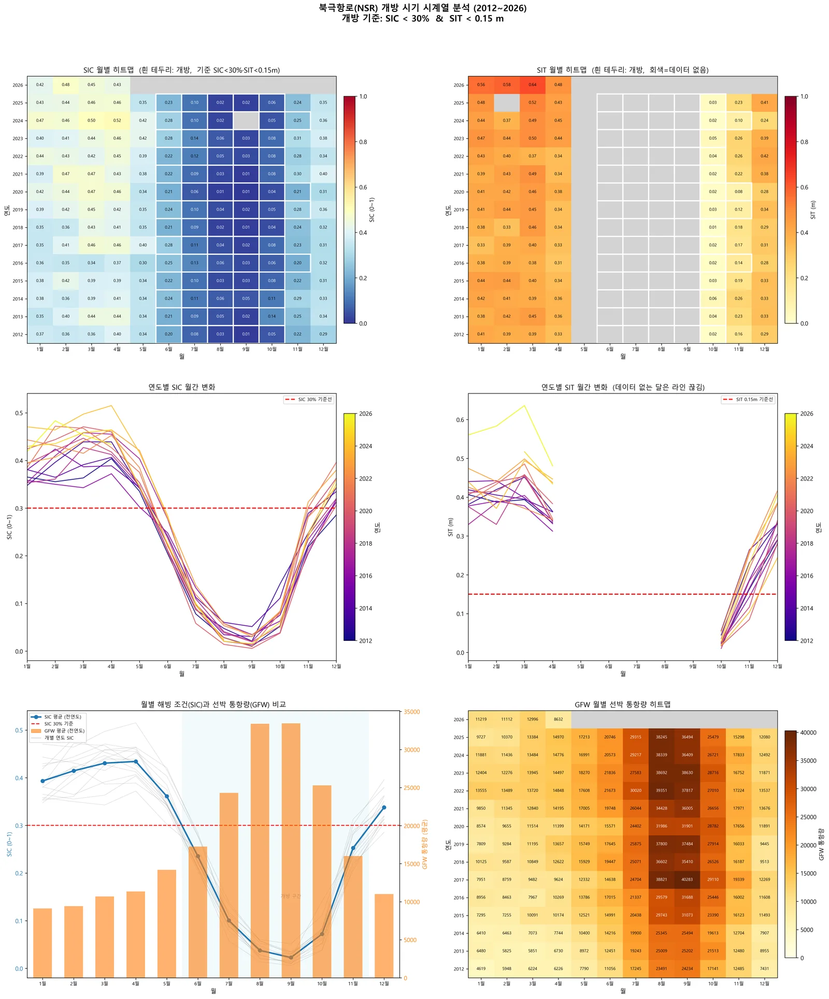

← 프로젝트 목록← All projects
북극항로(NSR) 개방 시기 정량 분석Quantifying the Northern Sea Route Opening Window
해빙농도·해빙두께·실제 선박 통항 데이터를 겹쳐, 북극항로가 해마다 언제 열리고 그 기간이 어떻게 변해왔는지를 수치로 만들었다.Overlaid sea-ice concentration, thickness and real vessel traffic to quantify when the Northern Sea Route opens each year — and how that window has shifted.
배경 · 목표Background
- 기후변화로 북극 해빙이 줄며 북극항로의 상업적 이용 가능성이 빠르게 커지고 있다.
- 북극항로는 수에즈 경유 대비 거리 약 40%, 운항시간 약 30% 단축 잠재력이 있다.
- 그러나 해빙 농도·두께·표류가 운항 가능 여부를 직접 결정하고, 계절 변동이 매우 크다.
- 2017년 발효된 IMO Polar Code는 북극 운항 시 정확한 빙상 정보 활용을 의무화한다.
- Arctic sea ice is retreating, and with it the commercial viability of the Northern Sea Route is rising fast.
- The NSR offers roughly 40% shorter distance and 30% shorter transit than the Suez route.
- But ice concentration, thickness and drift directly determine navigability, and they swing hard with season.
- The IMO Polar Code, in force since 2017, mandates the use of accurate ice information for Arctic transits.
방법Method
- OSI-SAF 해빙농도(SIC) NetCDF 자동 다운로드·처리 코드 개발.
- NSIDC · SMOS 해빙두께(SIT) 자동 수집 파이프라인 구축.
- Global Fishing Watch API로 실제 선박 이동 데이터 수집.
- SIC + SIT + 선박 데이터를 공간·시간 정합해 월별 시계열로 융합.
- SIC 15% 기준으로 항로 개방 가능 시기를 연도별·구간별(서부·중부·동부)로 정량화.
- 2012–2026년 월별 자료로 장기 추세 분석.
- Built automated download and processing for OSI-SAF sea-ice concentration NetCDF products.
- Built a collection pipeline for NSIDC and SMOS sea-ice thickness.
- Pulled real vessel movement data via the Global Fishing Watch API.
- Fused SIC, SIT and vessel data onto a common space-time grid as monthly series.
- Quantified the opening window per year and per route segment (west, central, east) using a 15% SIC criterion.
- Analysed long-term trends from monthly data spanning 2012–2026.
결과Results
- SIC · SIT · 선박 3개 데이터소스 자동 수집 파이프라인 완성
- 2012–2026 연도별 북극항로 개방 시기 시계열 도출
- 항로 구간별(서부 · 중부 · 동부) 개방 패턴 차이 분석
- 연구개발계획서 작성 — 다중센서 융합 해빙 정보체계 기획
- An automated pipeline across three data sources: SIC, SIT and vessel traffic.
- Year-by-year NSR opening-window series for 2012–2026.
- Segment-level analysis showing how west, central and east differ.
- An R&D plan for a multi-sensor sea-ice information system.




배운 점 · 한계What I learned · Limitations
- 해빙 원격탐사 센서별 특성 — 수동 마이크로파의 긴 시계열과 낮은 해상도, SAR의 고해상도와 좁은 관측폭, 고도계의 선형 커버리지 — 를 비교 정리했다.
- NetCDF 극지 투영 좌표계 처리와 다중 데이터소스 시공간 정합을 익혔다.
- AIS를 직접 구하기 어려울 때 GFW가 실용적 대안이 된다는 것을 찾아냈다.
- 한계: 실시간 개방 예측 모델까지는 아직 가지 못했다. 현재는 사후 분석 단계다.
- Mapped out the trade-offs between sea-ice sensors: passive microwave gives long records at coarse resolution, SAR gives detail over narrow swaths, altimeters give thickness along thin tracks.
- Learned polar-projection NetCDF handling and multi-source space-time alignment.
- Found that GFW is a workable substitute when AIS data is hard to obtain directly.
- Limitation: this is still retrospective analysis — a real-time opening forecast model does not exist yet.
산출물Deliverables
- [연구개발계획서] 북극 항로
- SIC/SIT/GFW 자동 수집 코드
- 분기별 분석 주제 제안서
- Northern Sea Route R&D plan
- SIC/SIT/GFW collection code
- Quarterly analysis topic proposals
원본 보고서와 발표자료는 사내 자료로 공개하지 않습니다. 분석 코드는 GitHub에 정리되어 있습니다.Source reports and decks are internal and not published here. Analysis code is organised on GitHub.